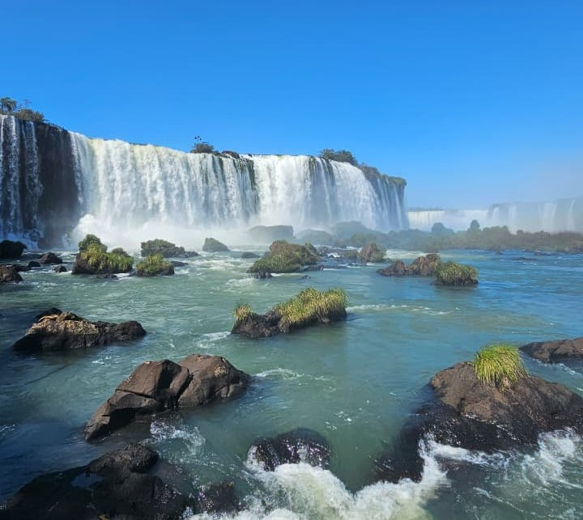
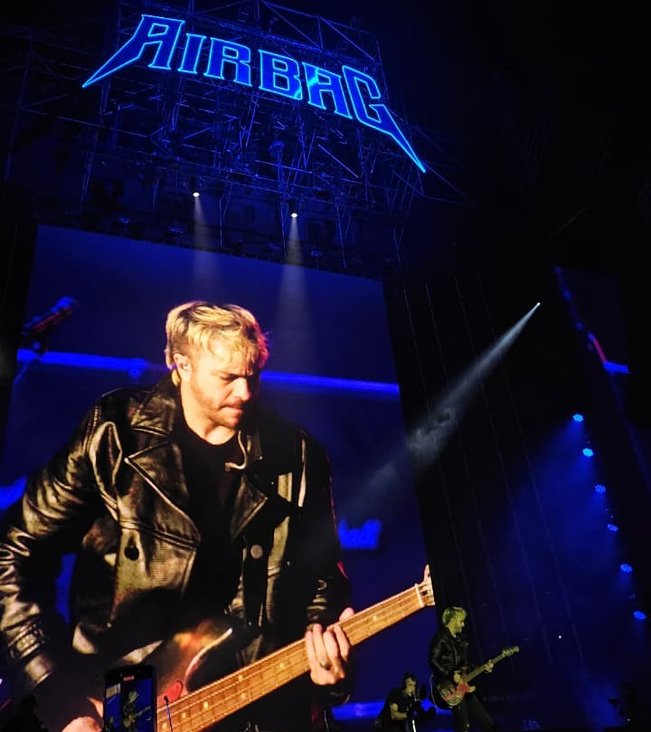

Viajes y experiencias lindas

A mi familia y a mí nos gusta mucho viajar, fuimos a lugares como Chile, Uruguay, Brasil, San Luis, Claromecó, Calafate, y el año pasado nos fuimos a Las Cataratas del Iguazú. En lo personal, fue uno de los mejores viajes que hicimos juntos.
Además, el año pasado me fui a Bariloche por el viaje de egresados. Nos fuimos el 04/09/25 y volvimos el 12/09/25. Fue una experiencia hermosa, creo que la mejor que viví con mis amigos. Entre todos nos conocemos desde que somos muy chicos así que pasamos toda una vida juntos. Por lo que fue más lindo vivir esta experiencia con todos ellos.
El año pasado, con mi grupo de amigas del colegio, nos fuimos a Mar del Plata en el verano. Fueron unas vacaciones hermosas que disfrutamos todos los días que estuvimos allá. Como la pasamos tan bien, este año lo vamos a repetir pero con más amigos y más días.
Seguro nos vayamos la primer quincena de Enero y nos quedemos 10 días allá. Con mis amigas vamos a alquilar un departamento para 4, como el año pasado, y nuestros amigos van a la casa de la familia de uno de los chicos. Igualmente, estamos organizando para alquilar cerca de donde están ellos para que sea más cómodo juntarnos allá.
Hobbies

Casi todos los fin de semanas salgo a caminar con mi papá y mi hermana. Solemos ir hasta el centro, merendamos, compramos ropa y volvemos a casa a la noche. Es un plan que, sobre todo, me encanta hacer los sábados.
Además, como hobbie me gusta mucho tocar el piano; el que tengo me lo regaló mi papá de cuando él era chico. La primera vez que toqué el piano fue en el colegio, cuando iba a primaria, pero actualmente sigo practicando algunas canciones nuevas para no olvidarme de la técnica.
En mi tiempo libre suelo leer mucho, aunque ultimamente no lo estoy haciendo tanto porque me gusta hacerlo cuándo sé que no tengo nada para hacer, por ejemplo, de vacaciones; a partir de diciembre soy capaz de leer el mismo libro de siempre con tal de leer algo. También escucho música todo el tiempo, haga lo que haga. Me gusta mucho hacer tarea, pasear a mi perra y cocinar escuchando música.
Por último, amo ver películas; el momento perfecto para verlas es a la noche antes de irme a dormir. Si las veo sola soy más de las románticas, pero si veo alguna con mi hermana o mi papá somos más de ficción o fantasía. En lo personal, soy de las series muy largas, como Grey´s Anatomy o The Suits; esas son mis series favoritas. El momento perfecto para verlas es almorzando o merendando.
Conciertos

Soy una persona que ama ir a conciertos. Durante toda mi vida fui a 27 conciertos en total y me faltan ir a 3 más. El primer concierto al que fui fue en el 2018 a ver a DIVIDIDOS, me acuerdo que fui con toda mi familia y la pasamos hermoso.
El último fue este año y, con mi hermana, fuimos a ver a SODA STEREO. Ese día fue especial porque cuándo terminó el concierto ya eran las 00hs. y ese día justo era nuestro cumpleaños, así que empezamos muy lindo nuestro día de cumpleaños
Mi mejor compañía para ir a conciertos es mi hermana, a todos los que fuí fue con ella. Los 3 conciertos a los que nos faltan ir son, el 06/10/26 el de ZAYN, el 30/10/26 el de CRO y el 26/11/26 el de ZEBALLOS. Estamos muy emocionadas porque son tres artistas que nos gustan mucho a las dos.
Algunos de los conciertos que más me gustaron fueron el de COLDPLAY por su show inigualable; el de THE WEEKND por su escenografía estupenda; NO TE VA GUSTAR por su show tranquilo y SODA STEREO por lo bien que estuvo lograda la idea de que aparezca Gustavo Cerati cantando con la banda.